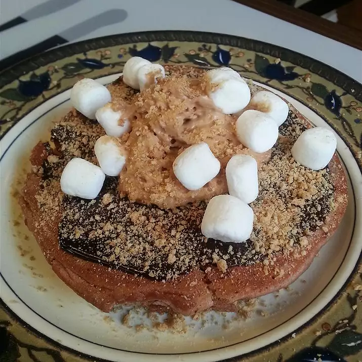

S'mores Pancakes

Description
Quick and easy chocolate pancakes, garnished with the key components of s'mores.
- 1 Cup Milk
- 1 Package instant hot chocolate mix
- 2 Cups baking mix
- 2 Eggs
- 3 Tablespoons white sugar
- 1 Tablespoon unsweetened baking cocoa
- 1 teaspoon vanilla extract
- Cooking spray
- 3 Tablespoon chocolate syrup, or to taste
- 3 Tablespoons whipped cream, or to taste
- 3 Tablespoons miniature marshmallows, or to taste
Directions
- Whisk milk and hot chocolate together in a large bowl until smooth. Add baking mix, eggs, sugar, cocoa, and vanilla extract; whisk until combined.
- Grease a large skillet with cooking spray and set over medium-high heat. Pour in 1/4 cup batter for each pancake. Cook until bubbles form on the top, 2 to 3 minutes. Flip with a spatula and continue cooking until golden brown on the edges, 2 to 3 minutes more. Transfer pancakes to a plate. Repeat with remaining batter.
- Drizzle chocolate syrup over pancakes. Top with whipped cream, marshmallows, and graham cracker crumbs.